som
Counter-Strike · Dust II
Trailer de 15 segundos. Vinte e quatro planos autorais que nunca existiram: nenhum frame veio de gameplay.
Roteiro, imagem, movimento, som e montagem. Tudo com inteligência artificial, do zero, sem equipe e sem locação. Abaixo tocam três filmes completos. Depois deles, as campanhas que já foram ao ar.
Cada um começou numa folha em branco. Nenhuma câmera, nenhum ator, nenhuma diária. São peças autorais, feitas por conta própria sobre jogos que eu gosto, não campanhas encomendadas por essas marcas. Clique para ligar o som.
Trailer de 15 segundos. Vinte e quatro planos autorais que nunca existiram: nenhum frame veio de gameplay.
Trailer de jogo de esporte de montanha. Esqui, parapente e drone em altitude: o tipo de plano que, filmado de verdade, exige uma semana de equipe nos Alpes.
Trailer narrado de jogo de corrida. A voz também é sintética, dirigida linha por linha até parar de soar como robô.
Nenhuma destas cenas aconteceu. Sou eu, colocado pela IA dentro dos projetos que fiz. O mesmo processo coloca qualquer marca em qualquer lugar.
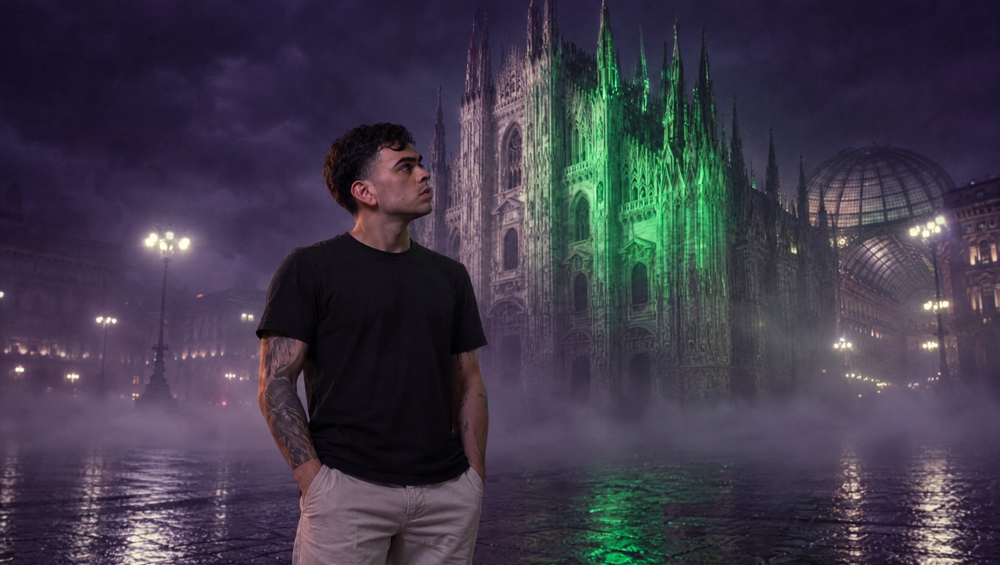
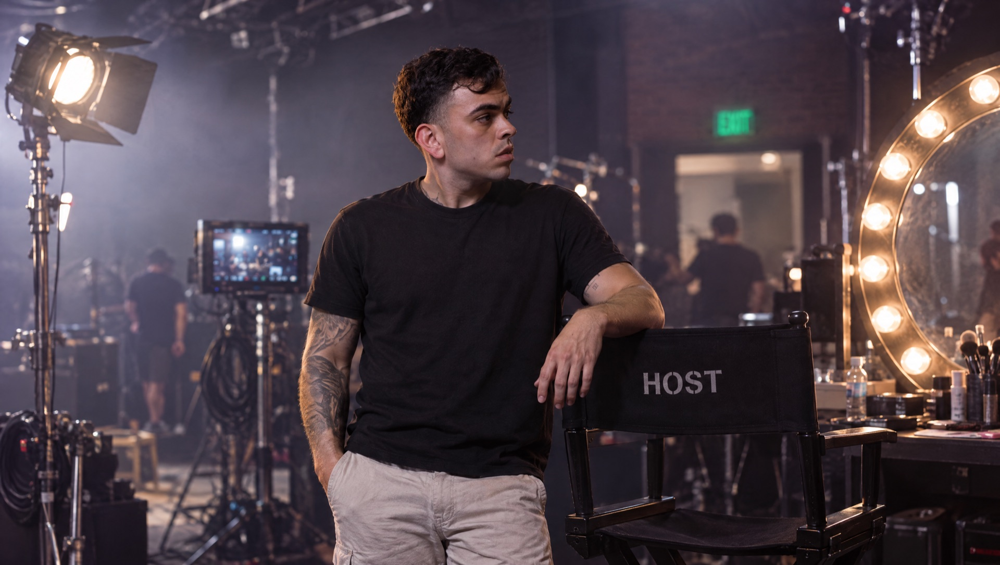
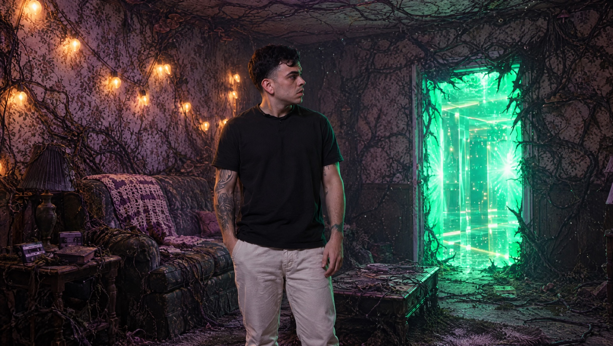
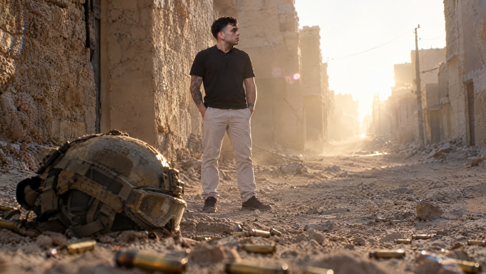
Onze projetos para marca, com peça publicada. Clique em qualquer um para abrir o estudo de caso completo.
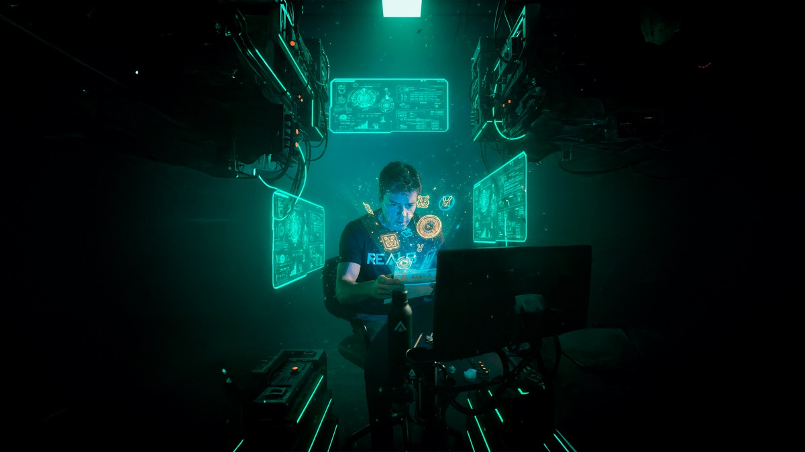
com Rodrigo Faro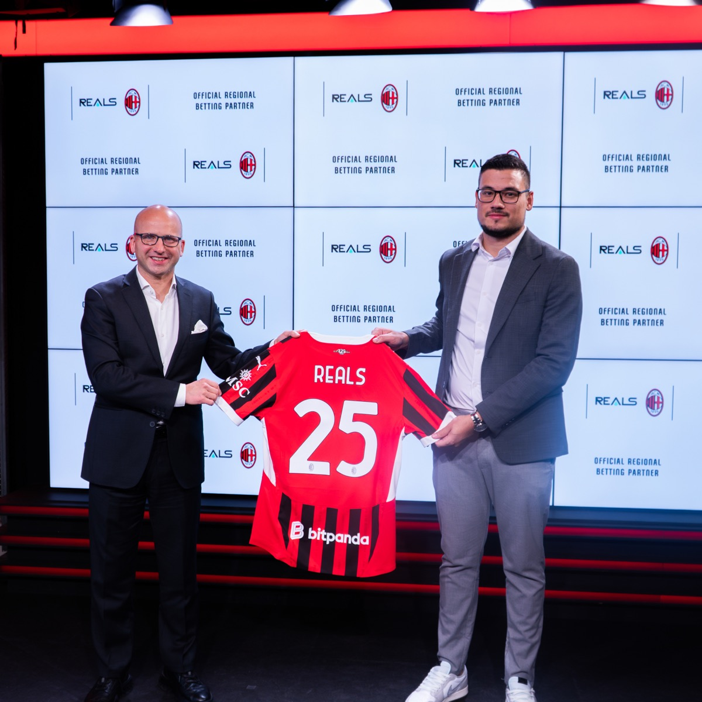
A.C. Milan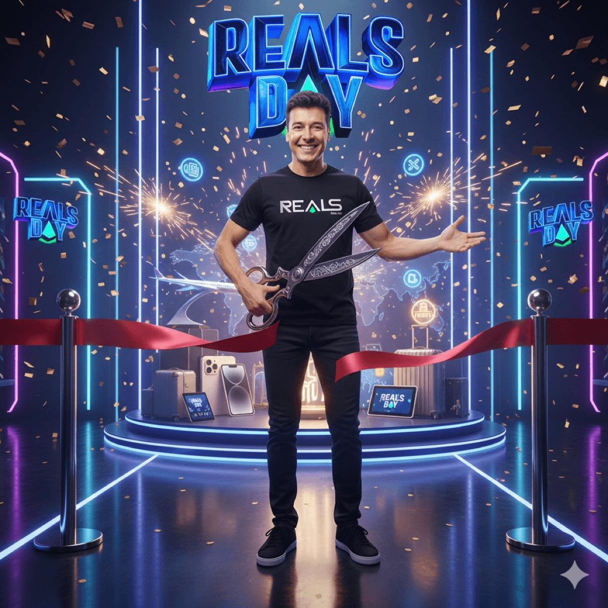
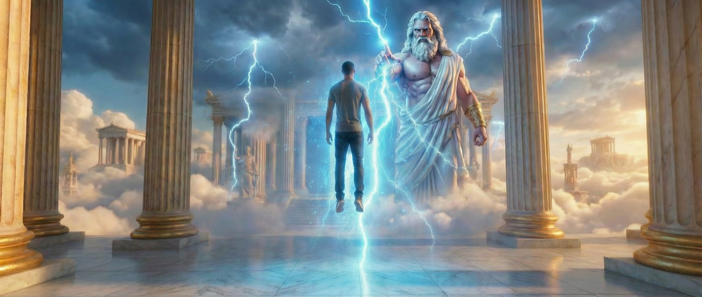
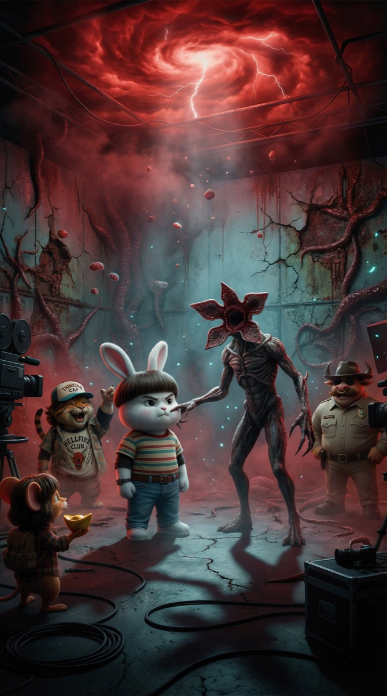
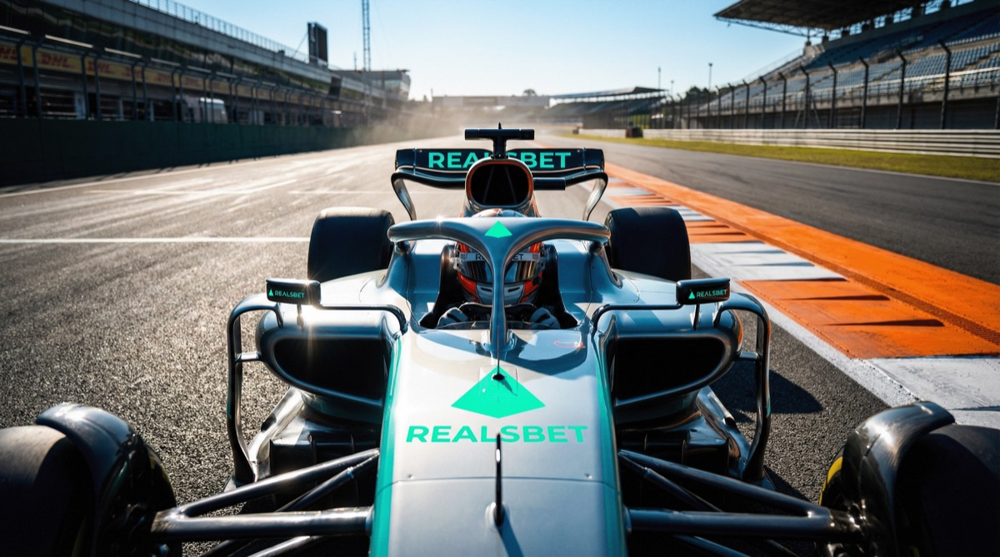
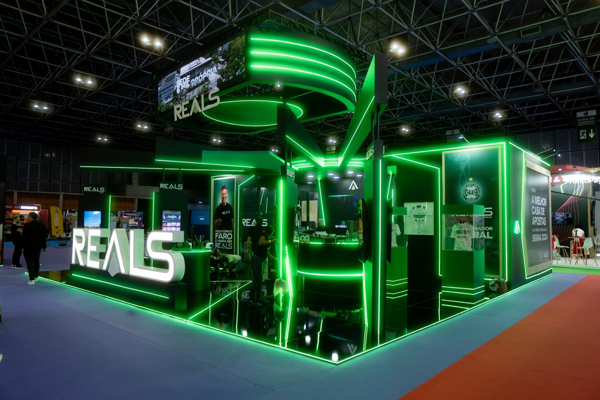
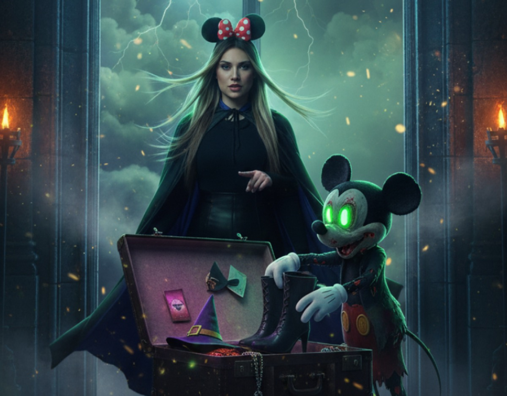
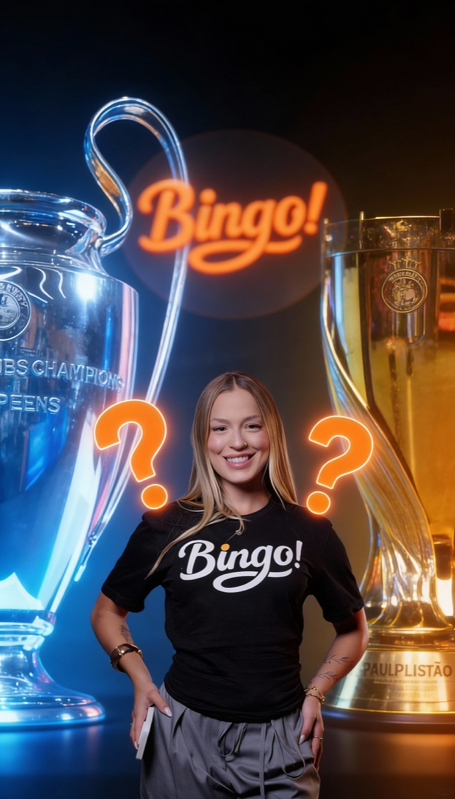
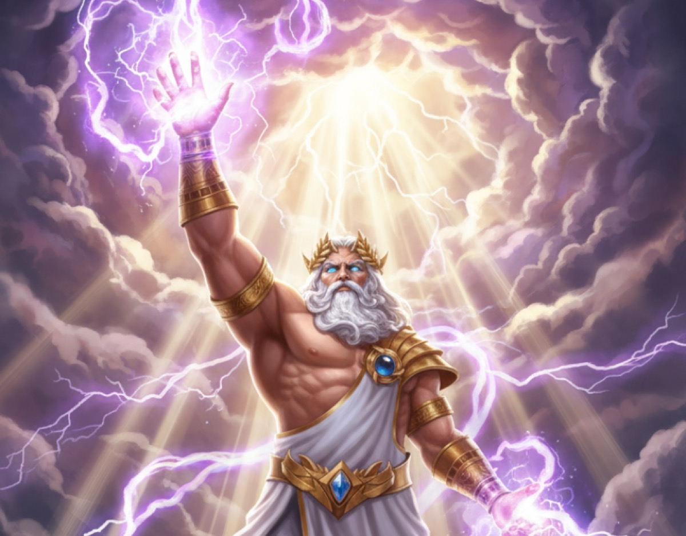
Filme bonito toda marca consegue fazer uma vez. O jogo de verdade é o de toda semana: criativo novo no ar antes do anterior cansar.
O anúncio satura em dias, o algoritmo pune quem repete e a marca que publica pouco some do feed. Quem não escala criativo não escala tráfego.
Produção tradicional escala contratando: mais set, mais equipe, mais prazo. O custo cresce junto com o volume, então o volume para onde o orçamento para.
Com IA, uma ideia aprovada vira uma família de criativos: variações de gancho, formato e duração pra testar no tráfego. Volume de agência, operação de uma pessoa.
Entra o briefing, sai a campanha inteira. Roteiro, imagem, movimento, som, montagem e as versões de cada peça saem do mesmo pipeline, sem fila de fornecedor. Você aumenta a frequência de publicação sem aumentar a folha, e cada semana devolve criativos prontos pra subir.
Primeira conversa é rápida. Eu pergunto quatro coisas, digo se dá para fazer e quanto custa. Se não der, eu falo na hora.
Chamar no WhatsApp